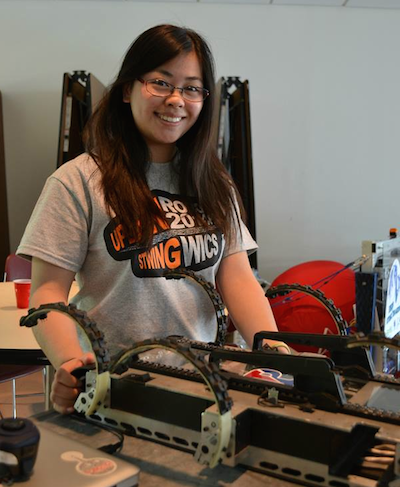

<!DOCTYPE html>
<html>

<head>
    <title>Evelyn Fifi Yeung</title>
    <link rel="stylesheet" href="./fa/css/font-awesome.min.css">
    <link rel="stylesheet" type="text/css" href="main.css">
    <script src="vendor/jquery.js"></script>
    <link href='http://fonts.googleapis.com/css?family=Source+Sans+Pro' rel='stylesheet' type='text/css'>

</head>

<body>
    <div id="navigation">
        <i class="fa fa-smile-o" id="about"></i>
        <i class="fa fa-pencil" id="education"></i>
        <i class="fa fa-cogs" id="projects"></i>
        <a href = "http://www.github.com/feefles">
            <i class="fa fa-github-alt" font-color="#fff">
        </i>
        </a>

    </div>
    <div id="content"></div>

    <script type='text/html' id="aboutDiv">
        <h3>About Me</h3>
        </img>
        <div id="aboutText" class="textBox">
        <p>
        Hi, my name is Evelyn "Fifi" Yeung. I am a junior studying Computer Science at the University of Pennsylvania. I am also pursuing a minor in Mechanical Engineering. While I originally joined Penn as an undecided major, I have found my home in computer science. I was attracted to the beauty of being able to create something out of nothing in the course of only a few hours (at hackathons), and have other people actually see it. 
        <p> I also have an avid interest in robotics. I am a research assistant in Kodlab, a Penn robotics lab, working on various projects involving legged robots. 

        </div>
    </script>

    <script type='text/html' id="educationDiv">
        <h3>education</h3>
        <div id="educationText" class="textBox">
            <h2>BSE Candidate in Computer Science, 2016</h4>
            <h3> Selected Coursework</h5>
            <ul>
                <li> Math 240: Linear Algebra
                <li> CIS 380: Operating Systems*
                <li> CIS 542: Embedded Systems Programming*
                <li> CIS 240: Introduction to Computer Systems
                <li> CIS 191: Linux/UNIX skills
                <li> CIS 371: Computer Organization and Design
                <li> CIS 121: Data Structures and Algorithms
                <li> CIS 197: Javascript
                <li> MEAM 210: Statics and Strength of Materials
                <li> MEAM 211: Dynamics
                <li>* in progress Fall 2014

            </ul>
        </div>
        <div id="skillsText" class="textBox">
        <h2> Skills </h2>
            <ul>
                <li>Python
                    <ul>
                        <li>Flask</li>
                        <li>Numpy/MatPlotLib</li>
                    </ul>
                </li>
                <li>Java</li>
                <li>Javascript
                    <ul>
                        <li>jQuery </li>
                        <li>Backbone</li>
                        <li>NodeJS</li>
                    </ul>
                </li>
                <li>C</li>
                <li>Git </li>
                <li>Matlab</li>
            </ul>
        </div>
        <div id="extraCurriculars" class="textBox">
        <h2> Extra Curriculuars</h2>
            <ul>
                <li>CIS 160 Teaching Assistant: Weekly recitations for section of 22, office hours, and grading</li><br>
                <li>Research assistant in <a href="www.kodlab.seas.upenn.edu">Kodlab</a></li><br>
                <li>Science and Technology Wing <a href="www.stwing.upenn.edu">(Stwing)</a> 2012-present</li><br>
                <li>Kings Court English House Special Events Manager</li>
            </ul>
        </div>

    </script>
    <script type='text/html' id="projectDiv">
        <h3>projects</h3>
        <div id="projects">
            </img>
            </img>
            </img>
        </div>
    </script>


    <script src="main.js"></script>
</body>

</html>
